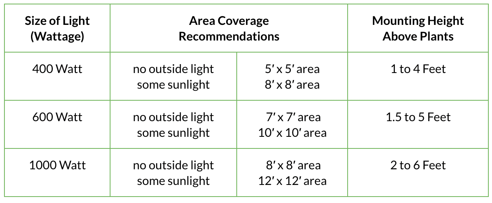
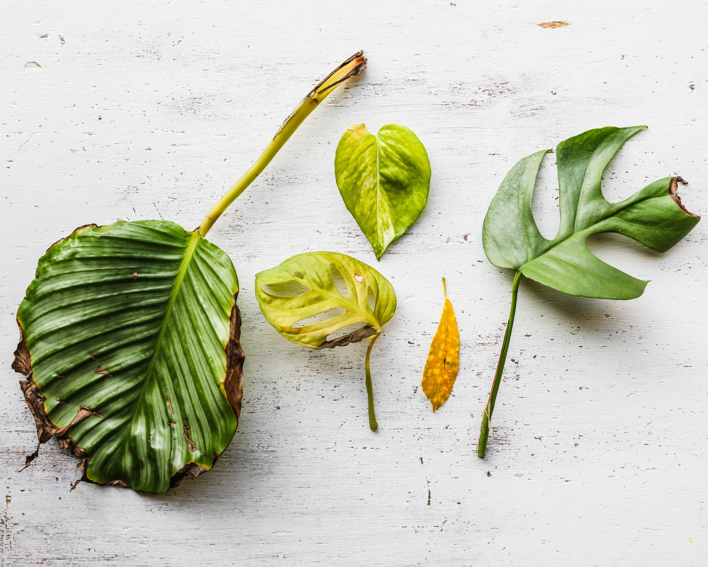
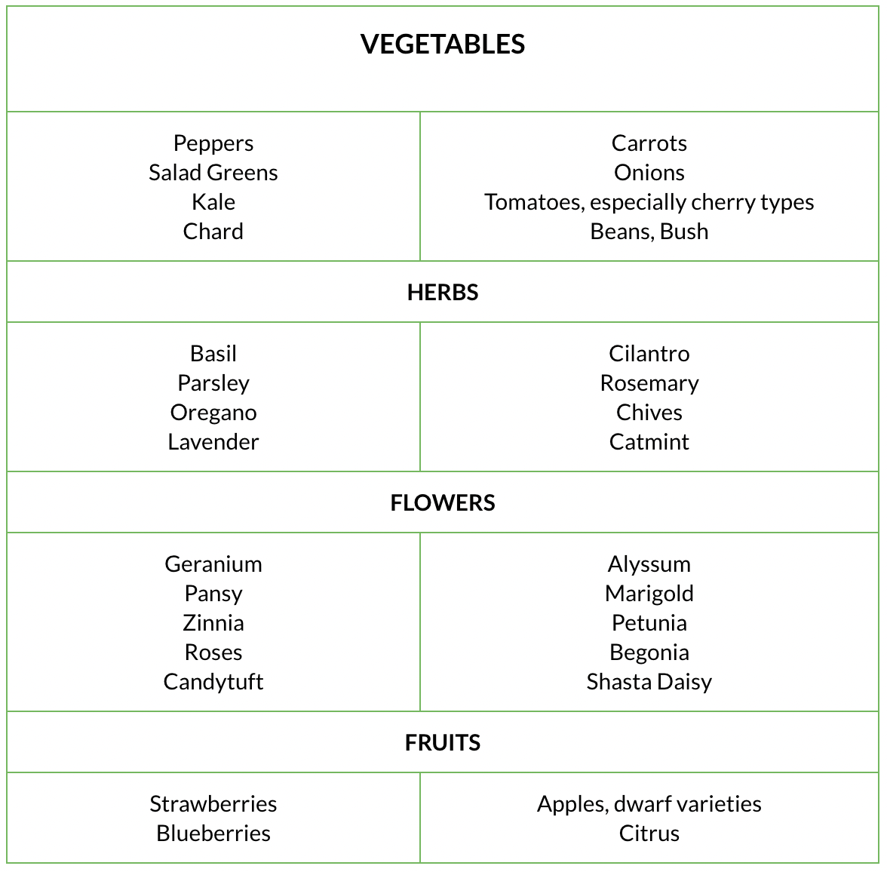
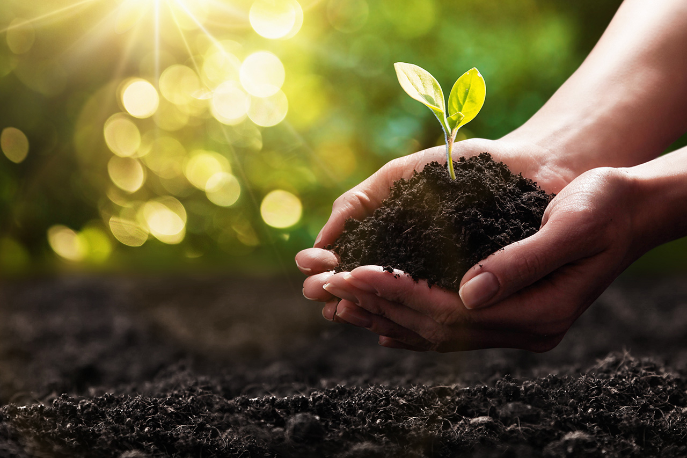
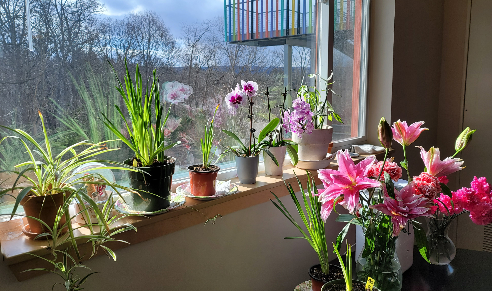

Just like any gardens, indoor gardens can be as small and compact, or as big and grandiose as you like. But choosing the right space and location is an important first step. Whether you dedicate an entire room, or a corner of the windowsill in your bedroom, two important factors to consider are the light and air of your space.
Light
Make sure your space gets decent light. Even shade-tolerant plants need some minimal sunshine! You will know if a plant is lacking exposure to light when they grow tall and thin. And for those that flower or produce fruits, they will lack the energy to do so. When natural sunlight is not enough, consider getting artificial grow lights.

Air
In addition to light, the temperature and humidity of the air is also crucial.
Temperature
Most plants thrive well between 65-75°F. If the environment is too hot, they will be small and weak. If the environment is too cold, the leaves might turn yellow and fall off. I find that in general, the temperature I find comfortable indoor, the plants usually do as well.

Humidity
Indoor often tends to be drier than outside where plants naturally thrive. In winter when the heat is on, indoor becomes even drier for plants. Check to see if the tips of the leaves are turning brown, or the plants look withered and have fallen leaves. To increase humidity, you can mist your plants daily or more. In my case, I got a regular humidifier to put next to the plants. It works well for my plants and on top of that, makes my skin feel better!
Step 2Choose the Right Plant
You can pretty much choose any plant to start your indoor gardening journey. Anything that grows outdoor could be grown indoor, as long as the space is allowed. Since your plants are all going to be under the same environment, consider choosing the ones that thrive under similar temperature, light, and humidity. Here are some potential choices, but again -- ANYTHING IS POSSIBLE!

Step 3Pick the Right Soil

Good soil is extremely important for your indoor plants, or any plants. There are four components of soil: Minerals, Organic Matter, Water, Air. Soil found outdoor is not a good choice for your indoor plants. Outdoor soil is often too heavy, meaning that it has a high clay content making it dense and compact, leading to poor drainage and less air for your indoor plants. In addition, outdoor soil is not sterile and therefore may carry diseases or weeds. Therefor, look for a potting mix that is specific for indoor plants.
Another fun option for your indoor plants could be Hydroponics -- growing plants in water! More specifically, it would be a water-based mineral nutrient solution.
Step 4Love & Sunshine

Just like raising a pet or a child, pay attention to your plants and observe their changes and response to the environment you have established. Their leaves, their stem, their roots will signal to you how they are feeling. Water thoroughly, but not too frequently. Do not let the water collect under the plants. It will lead to lack of air, rot, or possibly diseases. ALWAYS water with room-temperature water.
Now, you have obtained the basics of all you need to start indoor gardening. All there is left is to provide continuous love and care for your plants. And also some patience -- Let time take its course.